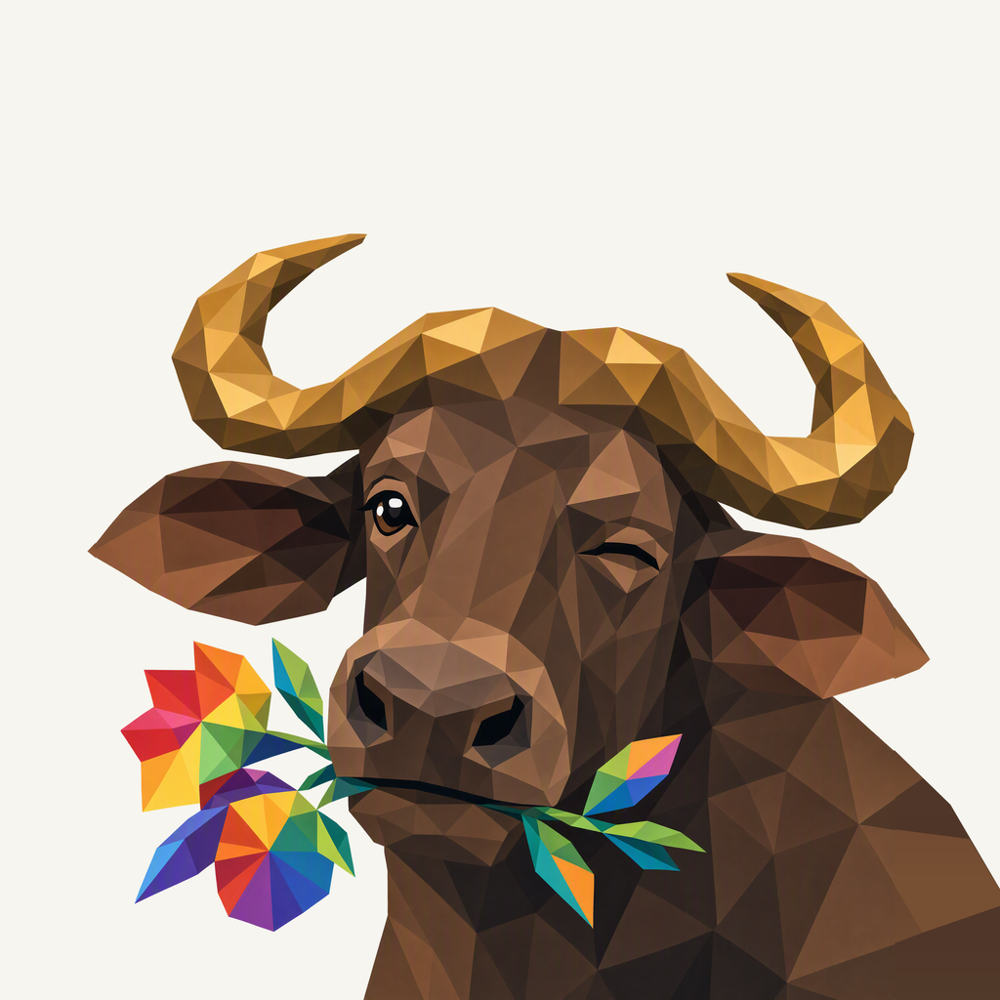
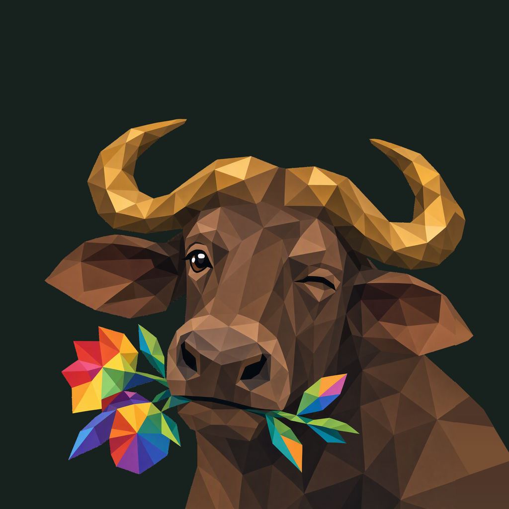

01 / Composition
A close encounter
The face and flower sprig share a close portrait. A short natural neck enters through the lower frame, with room around the horns, ears, and the complete colorful gesture.
Animal family · Owner-approved Bogo study
A natural close-up, a familiar wink, and one bright flower sprig.
Adopted in Bogo locally · finishing 04
Native 2048 × 2048

01 / Composition
The face and flower sprig share a close portrait. A short natural neck enters through the lower frame, with room around the horns, ears, and the complete colorful gesture.
02 / Drawing
Broad walnut and gold facets shape the head, curved horns, and relaxed shoulders. A plain muzzle keeps attention on the wink and the single mouth-held rainbow sprig.
03 / Presentation
Broken angular arches sit quietly in the warm mineral field. Fine grain and soft contact shadows give the flat facets a tactile setting.
The same artwork at actual display sizes.
At 32 px, the broad golden horns, brown face, and colorful sprig carry the identity. At 16 px, the wink and separate petals simplify into the silhouette and a small rainbow accent.
A distinct presentation field, with colors sampled from the native bogo artwork.
Select a swatch to copy its hex value. Bogo’s existing site primary, #0051BD, remains a separate UI color.
One foreground, checked on two contrasting backgrounds.


Azure Foundry · gpt-image-2 · native 2048 × 2048
Loading prompt…
The focused image request used Bogo 03 for the liked face, Bogo 04 for animal anatomy only, and the approved Frogie for connected facets. The boards below guide the separately composed presentation.


{kind=link}
{kind=link}
{kind=link}
{kind=link}
{kind=link}